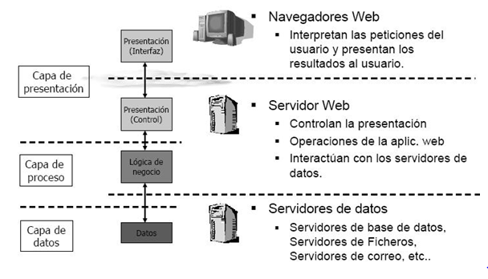

Apertura · 5 min
Bienvenida y presentación del curso
Contexto general del programa, presentación del equipo y del proyecto que vamos a construir juntos.
¿De qué trata este curso?
A lo largo de 2 semanas y 10 clases vamos a construir, desde cero, un sistema de gestión de turnos y trámites para una repartición gubernamental. Al final, ese sistema va a tener backend, base de datos, y una interfaz para el ciudadano.
No se necesita experiencia previa. Sí se necesita curiosidad, disposición para equivocarse y ganas de construir cosas que funcionen.
No se necesita experiencia previa. Sí se necesita curiosidad, disposición para equivocarse y ganas de construir cosas que funcionen.
Proyecto integrador: sistema de turnos
Como hilo conductor vamos a desarrollar un sistema similar al que usan ANSES, AFIP o cualquier municipio para atender al ciudadano. Al final del curso va a incluir:
Backend Django
Base de datos PostgreSQL
API REST
Frontend con templates + JavaScript
Panel de administración
Conceptos · 10 min
Arquitectura de una aplicación web
Cuando un ciudadano accede a Argentina.gob.ar o solicita un turno en PAMI, hay tres capas de tecnología trabajando en simultáneo.
Esquema de arquitectura web

Frontend
HTML · CSS · JavaScript
Lo que el ciudadano ve e interactúa. Formularios, botones, pantallas. Corre en el navegador o la app del usuario.
Ej: El formulario de solicitud de turno en Mi Argentina. Alguien programó cada campo, el botón y el mensaje de confirmación.
Backend
Python · Django
El servidor: recibe solicitudes, aplica reglas de negocio, valida datos, consulta la base de datos y devuelve respuestas.
Ej: Cuando AFIP valida si una declaración tiene errores antes de aceptarla. Nadie lo ve, pero sin esto nada funciona.
Base de datos
PostgreSQL
Guarda toda la información de forma persistente: ciudadanos, trámites, turnos, documentos, historial.
Ej: El padrón electoral, el SUBE, el Registro Civil. En su núcleo son bases de datos con aplicaciones encima.
¿Cómo fluye una petición? — Ejemplo: turno en PAMI
1
El ciudadano toca "Pedir turno"
El frontend captura la acción. El ciudadano ve un spinner o mensaje de carga.
2
El frontend envía una solicitud HTTP
"CUIL 20-12345678-3 quiere un turno para el martes." Esto viaja por internet hasta el servidor.
3
El backend procesa la solicitud
Verifica credenciales, controla cobertura activa, busca disponibilidad horaria. Aplica las reglas del sistema.
4
Guarda en la base de datos
El turno queda registrado con fecha, hora, médico asignado y estado "confirmado".
5
El frontend muestra la confirmación
"Tu turno es el martes 15 a las 10:30 en sede Palermo." Todo esto ocurre en menos de un segundo.
Tecnología · 10 min
Stack tecnológico del curso
Por qué elegimos estas herramientas y no otras.
Python
Python es un lenguaje de programación de propósito general:
- Permite crear scripts.
- Permite automatizar tareas.
- Permite construir APIs.
- Permite desarrollar aplicaciones web.
- Permite analizar datos.
Se destaca por su sintaxis clara y cercana al lenguaje humano, por eso es ideal para comenzar a programar sin perder potencia profesional.
Además, es un lenguaje dinámico: no tenés que declarar el tipo de dato de cada variable por adelantado, porque Python lo infiere en tiempo de ejecución.
Uno de los lenguajes más usados en el Estado y en la industria. Ya se usa en ARSAT, el Ministerio de Modernización y múltiples agencias que procesan datos públicos.
Además, es un lenguaje dinámico: no tenés que declarar el tipo de dato de cada variable por adelantado, porque Python lo infiere en tiempo de ejecución.
Uno de los lenguajes más usados en el Estado y en la industria. Ya se usa en ARSAT, el Ministerio de Modernización y múltiples agencias que procesan datos públicos.
¿Por qué es importante aprenderlo? Porque con Python podés resolver problemas reales rápidamente: desde validar trámites y procesar archivos masivos hasta construir servicios web escalables. Además, te abre salida laboral en backend, automatización, análisis de datos y machine learning.
Django
El framework web de Python más maduro. Viene con panel de administración, gestión de usuarios, ORM para la base de datos y seguridad incorporada. No hay que reinventar la rueda. Muchos sistemas de gestión interna del Estado hispanohablante están construidos sobre Django.
React
Librería de JavaScript para construir interfaces. Permite crear componentes reutilizables y actualizar solo las partes de la pantalla que cambian.
JavaScript en el navegador
Lenguaje que aporta interactividad: validaciones de formularios, manejo de eventos y actualización dinámica del contenido sin recargar la página.
Setup · 20 min
Instalación del entorno de desarrollo
Instalar todo lo necesario para trabajar. Al final de esta sección todos deben poder ejecutar
python3 --version en la terminal.Python 3.11+
Lenguaje principal del curso. Verificar que sea versión 3 y no Python 2.
Sitio oficial: python.org
WindowsDescargar de python.org — marcar "Add Python to PATH"
Macbrew install python3
Linuxsudo apt install python3 python3-pip
Verificarpython3 --version
Visual Studio Code
Editor de código gratuito con excelente soporte para Python. Instalar también la extensión oficial de Python (Microsoft).
Sitio oficial: visualstudio.com
Instalarcode.visualstudio.com → extensión "Python" de Microsoft
Verificarcode --version
Node.js (LTS)
Necesario para trabajar JavaScript moderno, herramientas de frontend y ejercicios prácticos en las semanas 6–7. Conviene instalarlo ahora.
Instalarnodejs.org → versión LTS
Verificarnode --version && npm --version
Práctica guiada · 25 min
Práctica en el intérprete de Python
Abrir la terminal y ejecutar
python3. El símbolo >>> indica que Python espera instrucciones. Todos los ejercicios se hacen en vivo, replicando lo que muestra el instructor.1
Imprimir texto
>>> print("Bienvenido al sistema de turnos de ANSES")
Bienvenido al sistema de turnos de ANSES
>>> print("Número de expediente: EXP-2024-00123")
Número de expediente: EXP-2024-00123
El texto siempre va entre comillas. Probarlo con el nombre propio:
print("Hola, soy [nombre] y trabajo en [organismo]")2
Operaciones matemáticas
>>> 47 * 250
11750
# Trámites por año (47/día × 250 días hábiles)
>>> 100 / 4
25.0
# El .0 indica que el resultado es decimal
Ejercicio: calcular cuántos trámites procesa una oficina en un año si atiende 47 por día durante 250 días hábiles.
3
Leer errores (importante)
Los errores son parte del trabajo diario. Vamos a cometerlos a propósito para aprender a leerlos.
>>> print("Turno confirmado"
SyntaxError: '(' was never closed
# Falta el paréntesis de cierre
>>> 10 / 0
ZeroDivisionError: division by zero
>>> print(turno)
NameError: name 'turno' is not defined
# No se puede usar algo que no se definió antes
Regla práctica: ir directo a la última línea del error. Ahí está el tipo y la descripción. Es toda la información que se necesita para solucionarlo.
4
Variables y f-strings
>>> nombre = "Juan Pérez"
>>> dni = 28456789
>>> print(f"Ciudadano: {nombre} — DNI: {dni}")
Ciudadano: Juan Pérez — DNI: 28456789
print("DNI: " + dni) da TypeError — Python no mezcla texto y números. Usar f-strings o str(dni).5
Cálculo con contexto real
Un agente de AFIP calcula el monto de una multa con recargo:
>>> deuda_original = 85000
>>> tasa_recargo = 0.15
>>> recargo = deuda_original * tasa_recargo
>>> total = deuda_original + recargo
>>> print(f"Deuda: ${deuda_original}")
>>> print(f"Recargo 15%: ${recargo}")
>>> print(f"Total: ${total}")
Deuda: $85000
Recargo 15%: $12750.0
Total: $97750.0
Nombres descriptivos, cálculos explícitos, salida legible — esos tres hábitos diferencian código profesional.
Actividad · 15 min
Primer programa en un archivo real
El intérprete interactivo es para explorar. Los programas reales viven en archivos. Vamos a crear el primero.
Paso 1 — Crear la carpeta del proyecto
mkdir sistema-turnos
cd sistema-turnos
code .
Esta carpeta va a contener todo el trabajo del curso. El comando
code . abre VS Code en la carpeta actual.Paso 2 — Crear
bienvenida.py y escribir el programaTipear el código en lugar de copiarlo. Ese hábito acelera el aprendizaje en las primeras semanas.
# Sistema de Gestión de Turnos - Módulo de Bienvenida
# Proyecto del curso de Desarrollo Web - Semana 1
organismo = "Administración Nacional de la Seguridad Social"
sigla = "ANSES"
version = "1.0"
print("=" * 50)
print(f" {sigla} - Sistema de Atención al Ciudadano")
print(f" Versión {version}")
print("=" * 50)
print()
print(f"Organismo: {organismo}")
print("Estado del sistema: operativo")
print("Turnos disponibles hoy: 48")
print()
print("Para continuar, comuníquese con el administrador.")
print("=" * 50)
Paso 3 — Ejecutar
python3 bienvenida.py
==================================================
ANSES - Sistema de Atención al Ciudadano
Versión 1.0
==================================================
Organismo: Administración Nacional de la Seguridad Social
Estado del sistema: operativo
Turnos disponibles hoy: 48
Para continuar, comuníquese con el administrador.
==================================================
Referencia
Troubleshooting de instalación
Problemas frecuentes en la primera clase y cómo resolverlos.
"Python no se reconoce como comando interno" (Windows)
Durante la instalación no se marcó "Add Python to PATH". Desinstalar y volver a instalar marcando esa opción. Alternativa: buscar "Editar variables de entorno del sistema" y agregar la ruta de Python manualmente.
"Tengo Python 2 en lugar de Python 3"
En Mac y Linux el comando
python puede apuntar a Python 2. Siempre usar python3 durante el curso. Verificar con python3 --version."VS Code no encuentra Python al ejecutar el archivo"
En la esquina inferior derecha de VS Code aparece el intérprete seleccionado. Hacer clic y elegir la versión Python 3 instalada.
"El comando
code . no funciona"Abrir VS Code → Ver → Paleta de comandos (Ctrl+Shift+P) → escribir "Shell Command" → seleccionar "Install 'code' command in PATH". Abrir terminal nueva e intentar de nuevo.